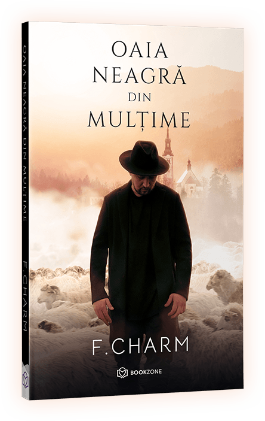

Fii "oaia neagră" din mulțime
După ce a cucerit scena muzicală, cu peste 295 de milioane de vizualizări pe Youtube, F.Charm ia cu asalt scena literară!
De o rară onestitate și sensibilitate, poeziile lui F.Charm sunt o pledoarie pentru ruperea de turmă și întoarcerea la spiritual, la tot ceea ce îți hrănește esența. Ai curaj să fii diferit și să redevii adevăratul TU?
39 Lei